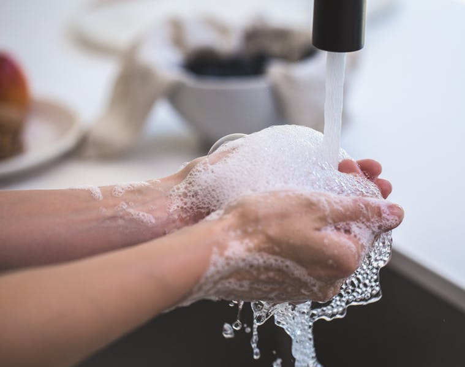
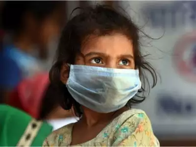
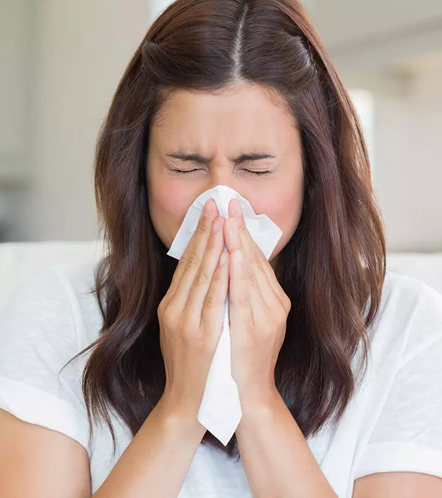
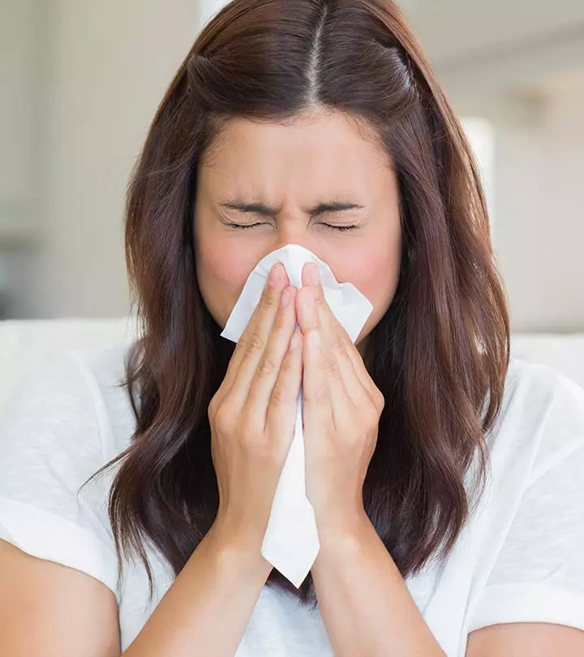

Precautions
   

- Stay home as much as possible and keep distance between yourself and others (within about 6 feet, or 2 meters), especially if you have a higher risk of serious illness. Keep in mind some people may have COVID-19 and spread it to others, even if they don't have symptoms or don't know they have COVID-19.
- Wash your hands often with soap and water for at least 20 seconds, or use an alcohol-based hand sanitizer that contains at least 60% alcohol.
- Cover your face with a cloth face mask in public spaces, such as the grocery store, where it's difficult to avoid close contact with others, especially if you're in an area with ongoing community spread. Only use nonmedical cloth masks — surgical masks and N95 respirators should be reserved for health care providers.
- Cover your mouth and nose with your elbow or a tissue when you cough or sneeze. Throw away the used tissue. Wash your hands right away.
- Avoid touching your eyes, nose and mouth.
- Avoid sharing dishes, glasses, towels, bedding and other household items if you're sick.
- Clean and disinfect high-touch surfaces, such as doorknobs, light switches, electronics and counters, daily.
- Stay home from work, school and public areas if you're sick, unless you're going to get medical care. Avoid public transportation, taxis and ride-sharing if you're sick.
- If you have a chronic medical condition and may have a higher risk of serious illness, check
- home
- prevention
- helpline
- treatments